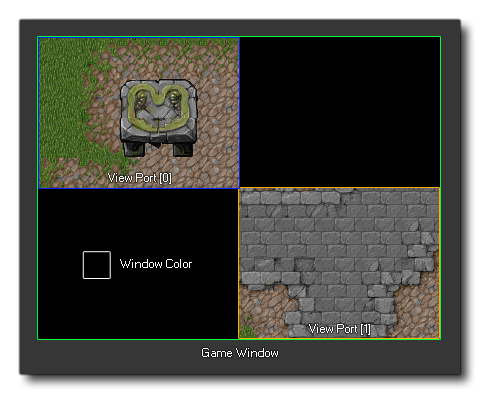

window_set_colour(colour);
| Streit | Beschreibung |
|---|---|
| colour | Die Farbe zum Festlegen der Region. |
Rückkehr: N / A
Diese Funktion kann die Hintergrundfarbe des Spielfensters einstellen. Diese Farbe stellt das dar, was für jene Bereiche des Spielfensters verwendet wird, die nicht von irgendwelchen Ansichten eingenommen werden. Das folgende Bild zeigt dies:
 Das obige Bild hat zwei Ansichten mit zwei Sichtfenstern, die jeweils an verschiedenen Positionen gezeichnet sind. Dies dehnt das Spielfenster aus, um beide Ports aufzunehmen, und verwendet die Fensterfarbe, um den Hintergrund zu färben, in dem keine Ansicht gezeigt wird.
if window_get_colour() != c_black
{
window_set_colour(c_black);
}
Der obige Code überprüft die Farbe des Fensters, um zu sehen, ob es schwarz ist oder nicht, und wenn es nicht ist, wird es schwarz gesetzt.